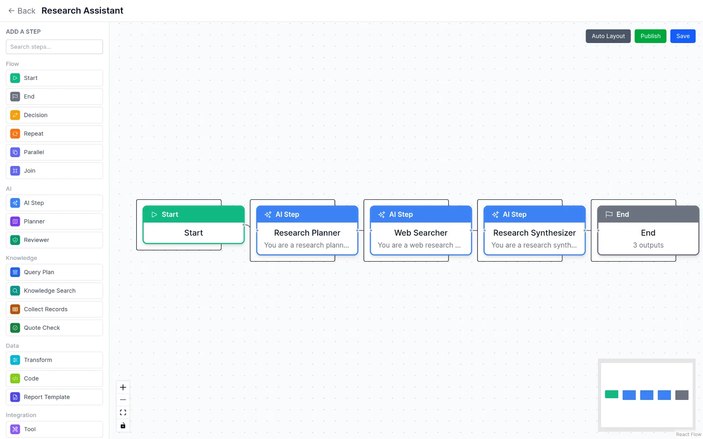
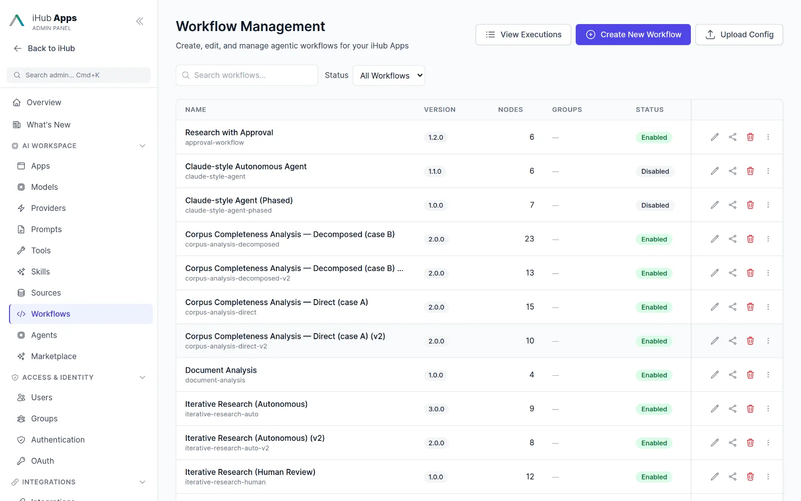
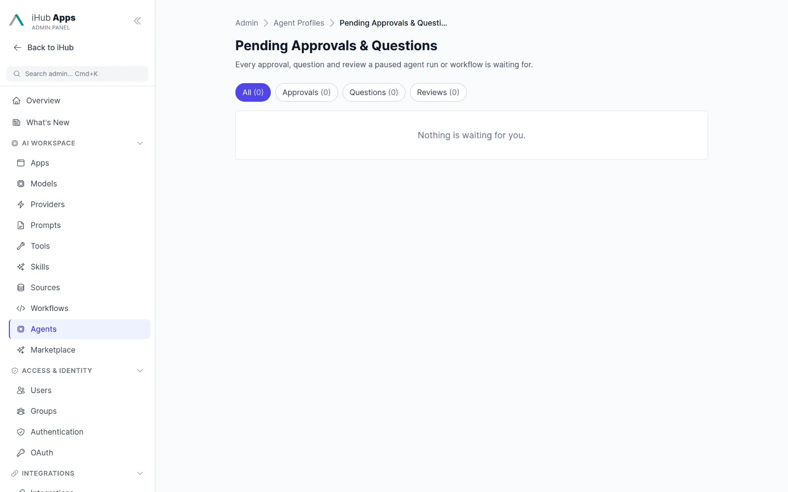
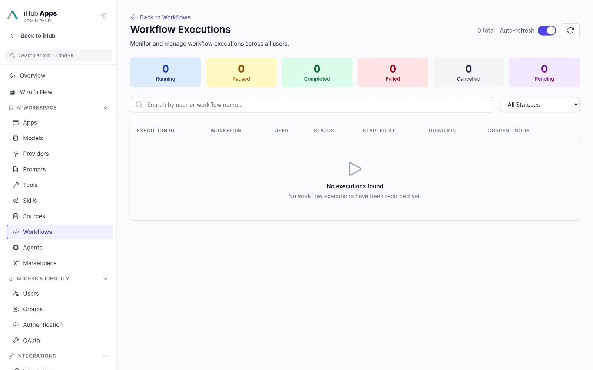
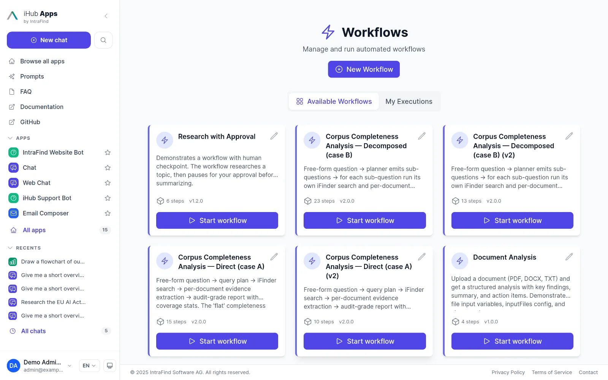
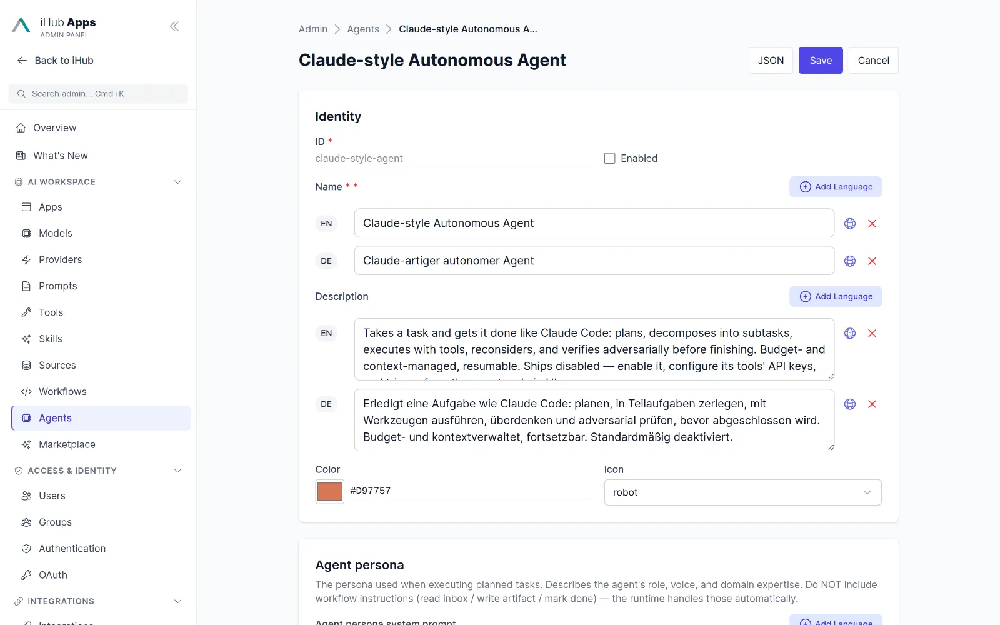
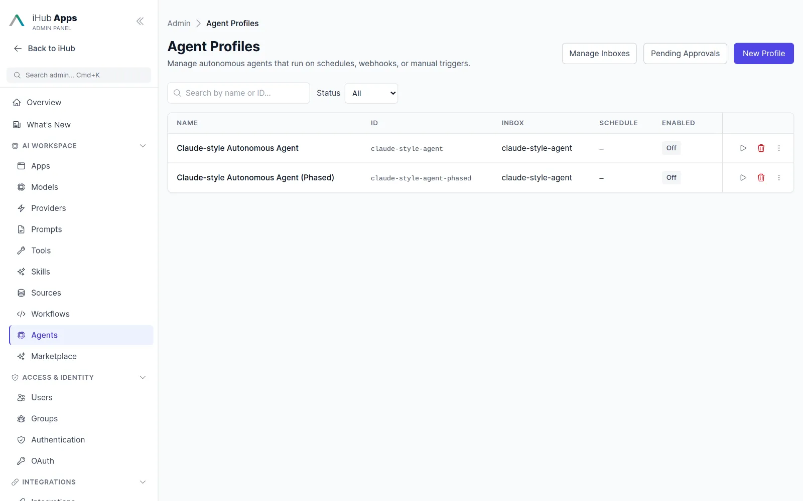

iHub Workflows & Agents
Build powerful process automation with AI steps, tools and human-in-the-loop approval. Let autonomous agents handle the recurring work, with budgets and an audit trail.
Workflows and the Agent Factory are preview features. Enable them under Admin → Features.

Automate anything. Deploy workflows for all departments.
18 workflow templates ship with the platform, from research to audit-grade document review.
Research Assistant, Topic Deep Dive, Iterative Research with autonomous or human review.

Knowledge Base Q&A, Document Analysis, Corpus Completeness Analysis over iFinder.

Research with Approval: a human checkpoint before results are published.

Every execution with status, steps, export, restart and cancel.

Users start workflows from their own page, from chat with @, or as a chat tool.
Build with full flexibility. Choose between agentic or fully deterministic automation.
AI steps
Prompt, planner and verifier nodes with per-node model and thinking overrides.
Flow control
Decision branches (expression, equals, contains, LLM), loops with nesting, parallel and join.
Actions
Tool, HTTP request with SSRF guard, sandboxed JavaScript, transform and memory nodes.
Human in the loop
Approval checkpoints and ask-user questions, restricted to approver groups.
Triggers
Manual, cron schedule with time zone, and HMAC-signed webhooks. Safe on multiple instances.
Versioning
Draft and published versions, version list, activate any version, export and import.
Run history
Checkpoints, crash-resume, SSE progress, per-execution export, restart and cancel.
Audit-grade nodes
Query plan, corpus search, structured records, quote validation and templated reports for legal and public-sector reviews.
Autonomous agents with guard rails.
The Agent Factory runs profiles that wake up on a schedule, a webhook or on demand, act with a service-account identity and stay inside a budget.
Agent profilesPreview
Plan, run tools, verify results adversarially and write artifacts. Each profile has its own tools, skills, model, token budget and tool-round limits.
- Long-term memory in Markdown
- Inboxes with TODO checklists
- Dynamic task queues with planner and drain

Approvals and operator steering
Actions that need a human wait in a pending-approvals queue visible only to approver groups. Operators can steer a run mid-flight and cancel or resume after a crash.
Runs, inboxes and memory
Every run is logged step by step. Inboxes hold the work an agent should pick up; memory holds what it learned. Both are editable by admins.

Workflows inside the chat.
Mention a workflow with @ or run it as a tool
Users can start a workflow from any chat by typing @, or an app can call a workflow as a tool and pass the result straight through. Progress streams into the conversation.
Questions & answers
What is the difference between an app, a workflow and an agent?
An app answers interactively in a chat. A workflow orchestrates a fixed sequence of steps with branches, loops and approvals. An agent is an autonomous profile that wakes up on a trigger, plans its own steps within a budget and asks for approval when needed.
Do I need to code?
No. Workflows are built on a visual canvas with a node palette, a variables panel and an edge-condition editor. Code nodes are optional.
How are workflows triggered?
Manually, from chat, on a cron schedule with time zone, or via an HMAC-signed webhook. A cross-process scheduler lock keeps schedules safe when you run several workers or servers.
Who can build and run workflows?
Permissions are per group, like everything else in iHub. Admins enable the preview feature under Admin → Features.
What happens if the server restarts mid-run?
Executions checkpoint after each node and resume automatically on start-up.
The essential AI stack for your company.
Simple for business users. Ready for advanced use cases. Governed by IT.
Chat
Model-agnostic chat for everyone in the company.
Learn more →Apps
Ready-made AI assistants for recurring tasks.
Learn more →Integrations
Tools, MCP, Outlook, browser, Nextcloud, Teams.
Learn more →API
OpenAI-compatible API, MCP gateway, OAuth.
Learn more →Models
Every major provider plus local models.
Learn more →Run iHub Apps in 60 seconds.
One command installs the standalone binary. No Node.js, no Docker, no database. Open http://localhost:3000, add a model key, and your team has 24 AI apps.
curl -fsSL https://raw.githubusercontent.com/intrafind/ihub-apps/main/install.sh | sh